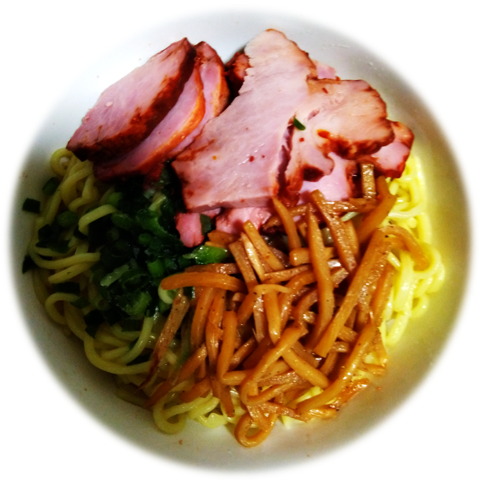
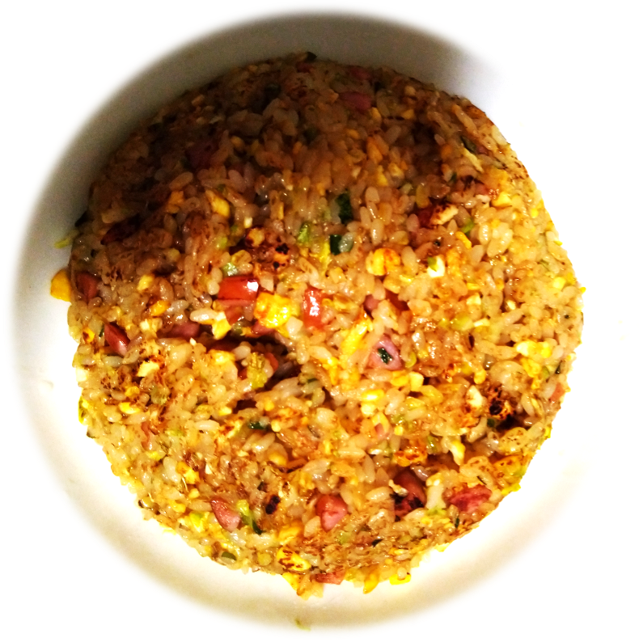

≪前の作品へ
作品一覧に戻る
次の作品へ≫
26
作品名：安くひとり飯を作る。
作者：松本和真
説明：

材料
個数
参考価格(個人調べ)
ラーメン
1玉
30円
チャーシュー
50g
100円
メンマ
30g
70円
小葱
1本
50円
合計
250円

材料
個数
参考価格(個人調べ)
ご飯
0.5合
30円
チャーシュー
50g
100円
キャベツ
1/8玉
20円
小葱
1/2本
25円
卵
1個
20円
1/4玉
40円
小葱
1本
50円
合計
250円
作り方
キャベツ、小葱ををそれぞれみじん切りにする。
ごま油を敷き卵をといて、フライパンで1分程度炒める。
ご飯、キャベツ、小葱をフライパンに入れて5~10分程度炒める。
調味料をまとめて、入れて味付けを行う。
お皿に盛り付けて完成!!